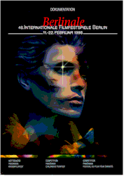

Contents | Features | Reviews | News | Archives | Store

Contents | Features | Reviews | News | Archives | Store
|  | 49th Berlin International |
Posted 12 February 1999
Scheduled to reassume the mantle of German capital in the fall of this year, Berlin has been undergoing increasingly accelerated changes since the tumbling of the wall a decade ago. This transformation is best seen on a grand scale on the Potsdamer Platz, just adjacent to the Brandenburg Gate; Berlin’s busiest pre-war square, it was bisected when the city was divided into east and west in 1961 but will now house not only the government, but the 50th edition of the venerated Berlin International Film Festival, scheduled for February of 2000.
For its 49th and final event in the former round-the-clock heart of the old West Berlin, nestled between the Zoo train station (of recent U2 fame) and the sprawling zoo itself, the Berlinale staff, which oversees the seven separate and distinct sections of the festival, has announced a program that at once celebrates contemporary European cinema and continues the wooing of high-profile Hollywood product that began in earnest only a few years ago. Within the Competition, Panorama, Forum of New Cinema, Market, Retrospective, Children’s Film Festival and New German Films sections, selections stick closely to these themes without excluding quality films from around the world. How many movies are shown in Berlin? The generally acknowledged second-largest film festival in the world (behind Cannes) no longer even hazards an official guess, although estimates vary between 600 and 700 titles unspooling in dozens of theaters and screening rooms throughout the city.
Acknowledging a bias towards German films in general and Berlin/Brandenburg production in particular, a local-themed title has been selected for opening night: first-time director Max Farberbock’s Aimee and Jaguar tells the real-life story of the title women, lovers in Berlin during World War II. Other new German films in the Competition include Potsdam-based director Andreas Dresen’s Nightshapes, the new movie from Beyond Silence director Caroline Link (Punktchen and Anton, an updating of the classic German children’s book by Erich Kastner), Wim Wenders’ new documentary on musician Ry Cooder and his new Cuban band Buena Vista Social Club.
The French are represented in the Competition by two grand masters of the cinema, Bertrand Tavernier (It All Starts Here) and Claude Chabrol (The Color of Lies), as well as young French filmmaker Thomas Vincent’s immigrant-themed feature Karnaval. Other European films vying for the Berlin Bear awards include Oscar-winning Spanish director Fernando Trueba’s The Girl of Your Dreams (set in late 1930s Berlin), fellow countryman Manuel Gomez Pereira’s Between Your Legs, and Portuguese filmmaker Manuela Viegas’ debut work Gloria (not to be confused with the recent Sharon Stone remake of John Cassavetes’ 1980 drama).
From Denmark comes Soren Kragh-Jacobsen’s Mifune’s Last Chant, a new film from the Lars Von Trier and Thomas Vinterberg (The Celebration) collective Dogma 95. The Swiss are represented by Francis Reusser’s War in the Highlands, while a rare high-profile Turkish film, Yesmin Ustaoglu’s Journey to the Sun, will have its premiere.
Moving east, Russia is represented by The Family, which was co-directed by Rustam Ibragimbekov and Ramiz Hassanoglu, and Aleksandr Rogoschkin’s new movie Checkpoint. Kazakhstan offers Serik Aprymov’s Aksuat, Poland has entered Jan Jakub Kolski’s semi-autobiographical The History of Cinema in Popielawach, Romania presents Gabor Tompa’s Chinese Defense and even Bulgaria is back in the act with Ivan Nitchev’s After the End of the World. The British film Simon Magus, directed by first-time helmer Ben Hopkins, features Sir Ian Holm, Embeth Davidtz and Rutger Hauer in an Eastern European village setting. Nikita Mikhalkov’s new Julia Ormond-starrer The Barber of Siberia was strongly rumored to be in the Competition program but doesn’t appear on the festival’s official website roster (http://www.berlinale.de).
Asia will be well represented, beginning with established Hong Kong filmmaker Ann Hui’s Ordinary Heroes and continuing with Naked Law from Yoshimitsu Morita (director of The Family Game). Other Competition entries include Israeli actor Jonathan Sagall’s Urban Feel, the Canadian films eXistenZ from David Cronenberg and Lea Pool’s Set Me Free.
And then, of course, there’s Hollywood. In addition to Robert Altman’s Sundance opening night feature Cookie’s Fortune and Tony Bui’s Three Seasons (the grand prize winner there), English-language movies vying for awards include Terrence Malick’s The Thin Red Line, John Madden’s Shakespeare in Love, Willard Carroll’s Playing By Heart and Stephen Frears’ The Hi-Lo Country. Hotly-anticipated world premieres include Alan Rudolph’s adaptation of Kurt Vonnegut’s Breakfast of Champions (starring Bruce Willis and Nick Nolte) and Joel Schumacher’s Eight Millimeter (with Nicholas Cage). Appearing out of competition are Carl Franklin’s One True Thing and Robert Rodriguez’ The Faculty. Again, there is a last-minute no-show, Robert Iscove’s She’s All That.
These newer films will be supplemented by two out of competition screenings in tribute to this year’s retrospective honorees, Shirley MacLaine and Otto Preminger. The former is scheduled to appear at a public screening of Hal Ashby’s Being There, while the latter’s rarely-seen 70mm print of Porgy and Bess will unspool at what is presumed to be the final Berlin festival Competition screening at the venerable Zoo Palast theater.
The International Jury of the Competition entries, chaired by Spanish actress Angela Molina, includes Dutch actor Jeroen Krabbe (The Fugitive), Malaysian-born Hong Kong action star Michelle Yeoh (Jackie Chan’s Police Story II, the Bond entry Tomorrow Never Dies), British set designer Ken Adam (who created the war room in Stanley Kubrick’s Dr. Strangelove), German director Katja von Garnier (Bandits) and four other international figures with connections to film.
Announcing a major theme that cuts across each of the principal sections, the festival will present "Documents Against Forgetting," an assemblage of films "dedicated to the Holocaust, racism and discrimination." Non-competing Competition entries that fit under this heading include James Moll’s The Last Days, the Steven Spielberg-produced documentary from his Shoah Foundation about five Hungarian Jews before, during and after World War II (both Spielberg and Moll are scheduled to attend). Composed of recently-rediscovered video shot by Leo Hurwitz at the 1961 trial of Adolf Eichmann, the Hebrew- and German-language The Specialist paints a chilling portrait of Hitler’s efficiency expert and the man responsible for the logistics of the Holocaust (the material was assembled and edited by Eyal Sivan, a French-based Israeli director).
Panorama titles to watch for include Little Voice and Still Crazy (both in U.S. release), Mike Figgis’ new film The Loss of Sexual Innocence, the documentary Nina Hagen: Punk & Glory and actor Tim Roth’s directorial debut, The War Zone.
Forum entries of note include Bennett Miller’s The Cruise, Michael Almereyda’s The Trance, Fruit Chan’s The Longest Summer and the world premiere of Aki Kaurismaki’s Juha -- which is rumored to be a silent film.
Gary Winick’s The Tic Code, featuring Gregory Hines, is the American standout of the Children’s Festival sidebar.
The current strength of the domestic cinema is represented in Heinz Badewitz’ New German Cinema program, which this year features Tom Tykwer’s Run, Lola, Run (screened at Sundance and to be released by Sony Classics later this year), Doris Dorrie’s magnificent Am I Beautiful?, Jan Schutte’s Fat World and Dani Levy’s The Giraffe.
The 49th Berlin International Film Festival runs from February 10 to the 22nd, and you can find periodic updates on Nitrate Online throughout the fortnight as well as a roundup of festival awards and film reviews to be posted towards the end of the month. Both an end and a beginning, the 1999 Berlin festival promises both joy and tears -- as well as an accurate barometer of world filmmaking now.
Contents | Features | Reviews | News | Archives | Store
Copyright © 1999 by Nitrate Productions, Inc. All Rights Reserved.